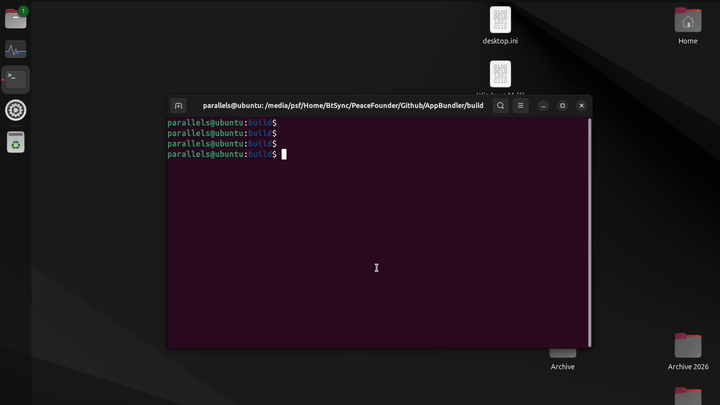

Snap
Snap is a sandboxed application package format for Linux, supported across most major distributions. AppBundler builds .snap packages with a fully open-source toolchain, so they can be created on any platform without a Linux build environment.

Build pipeline
The standard workflow describes the build in snapcraft.yaml and lets snapcraft fetch sources, compile, and package the application:
snapcraft.yaml → snapcraft → MyApp.snapsnapcraft is open source, but it expects to run the compilation itself and does not cross-compile. Since a snap is ultimately a SquashFS image with metadata, AppBundler assembles the staging directory itself and compresses it directly:
StagingDir → mksquashfs → MyApp.snapmksquashfs comes from squashfs-tools. It is redistributable and cross-compiled with BinaryBuilder, so snaps can be built from macOS and Windows as well as Linux.
Package contents
Before compressing, AppBundler assembles StagingDir/ with the following layout:
| Path | Purpose |
|---|---|
meta/snap.yaml | Package metadata and configuration |
bin/MyApp | Application launcher |
meta/icon.png | Application icon |
meta/gui/MyApp.desktop | Desktop integration |
meta/hooks/configure | Configuration hook |
Sandboxing and permissions are configured through the confinement level and the interfaces (plugs) declared in meta/snap.yaml.
Signing and installation
A locally built snap therefore has no assertions and must be installed with --dangerous. AppBundler applications usually use classic confinement, which also requires --classic:
sudo snap install --classic --dangerous myapp.snapIf the application is configured for strict confinement in meta/snap.yaml, drop --classic. Snaps installed this way get a local revision such as x1 and receive no automatic updates.
SnapStore
Once a snap is published, the store-signed version can be installed offline, for example on air-gapped machines. Download the snap together with its assertions, then import the assertions before installing:
snap download myapp # fetches myapp_N.snap and myapp_N.assert
sudo snap ack myapp_N.assert
sudo snap install myapp_N.snapSnaps preseeded into Ubuntu Core or custom images with ubuntu-image also carry their assertions and install without extra flags.
Debugging
To debug Snap packages, skip compression and install the staging directory directly. You can also inspect the sandbox environment of the installed application:
sudo snap try myapp_dir # install unpackaged directory
snap run --shell myapp # inspect sandbox environment interactivelyAPI
snap_config = Snap(project)
bundle(snap_config, snap_archive) do app_stage
# install files into app_stage
endAppBundler.Snap — Type
Snap([project]; arch, compress, windowed, kwargs...)Create a Snap configuration object for Linux application packaging.
When project is provided, configuration files are searched in project, then project/meta, then the built-in recipes directory. Application parameters (APP_NAME, APP_VERSION, etc.) are read from project/Project.toml, and packaging defaults (windowed, compress, etc.) are read from project/LocalPreferences.toml. Without project, only the built-in recipes and the active project's LocalPreferences.toml are used.
Arguments
project: Path to a project directory containingProject.toml, optionalLocalPreferences.toml, and optionalmeta/snap/overrides
Keyword Arguments
prefix = joinpath(dirname(@__DIR__), "recipes"): Base directory or array of directories to search for configuration files in sequential ordericon = get_path(prefix, ["snap/icon.png", "icon.png"]): Path to application icon filesnap_config = get_path(prefix, "snap/snap.yaml"): Path to Snap package metadata templatecommand::Cmd: Command launching the application; defaults tosnap.commandpreference. Its executable and escaped arguments are exposed to the templates asCOMMANDdesktop_launcher = get_path(prefix, "snap/main.desktop"): Path to desktop entry file template for GUI integrationconfigure_hook: Path to configuration hook script run onsnap set; resolved from prefix using the bundler predicate; omitted if not foundmain_launcher: Path to main launcher script installed intobin/; resolved from prefix using the bundler predicate; omitted if not foundwindowed: Iftrue, the application runs without a console window; defaults towindowedpreferencecompress: Iftrue, pack the staging directory into a.snaparchive; defaults tocompresspreferencearch = Sys.ARCH: Target CPU architecturepredicate: Bundler predicate used for hook selection; defaults tobundlerpreferenceparameters: Dictionary of parameters for Mustache template rendering. Whenprojectis provided, pre-populated fromProject.tomland preferences:APP_NAME,APP_DISPLAY_NAME,APP_VERSION,BUILD_NUMBER,APP_SUMMARY,APP_DESCRIPTION,BUNDLE_IDENTIFIER,PUBLISHER_DISPLAY_NAME,MODULE_NAME(Julia-based bundles only), andWINDOWED
Examples
Snap() # default recipes only
Snap(app_dir) # project with Project.toml parameters
Snap(app_dir; windowed = false) # project with keyword overrides
Snap(; prefix = ["custom/", "recipes/"]) # explicit search path